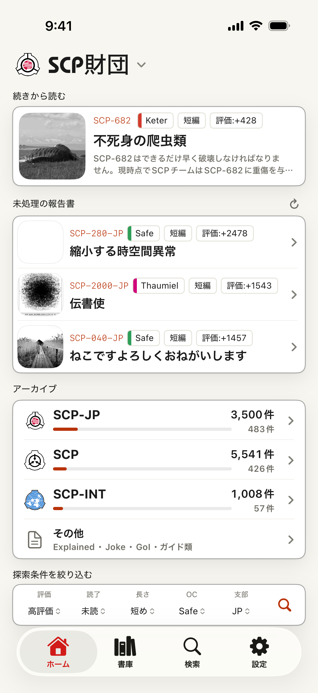
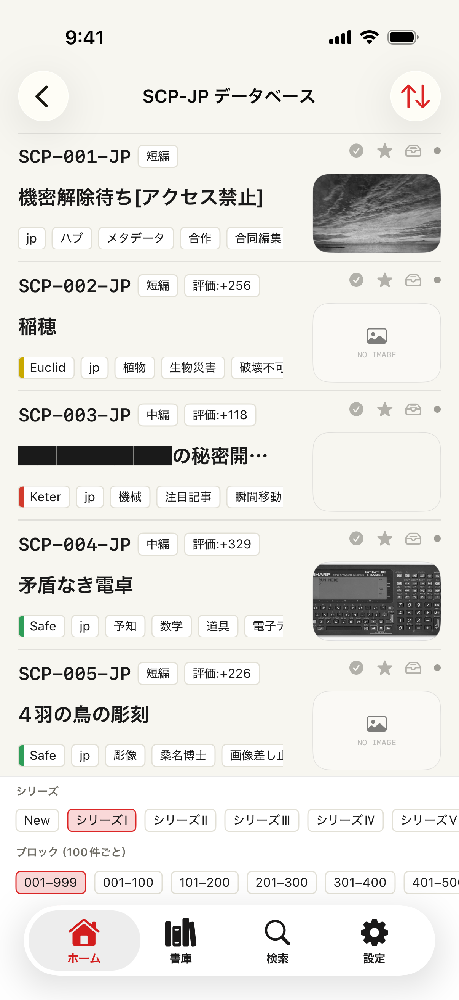
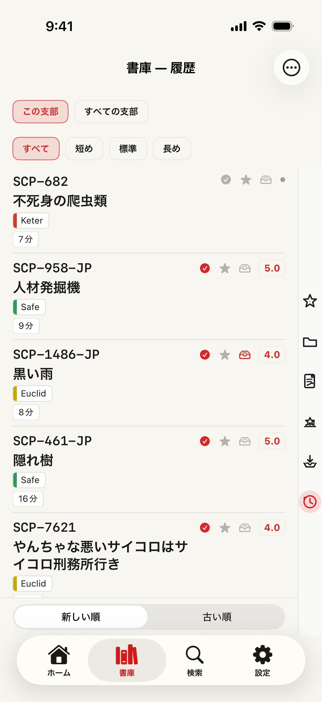

Free
番号・タイトル・タグ・Object Class・長さ・Wiki評価で探す検索は無料です。履歴、好み度、読書リマインド、ウィジェット、観測記録のサマリー・活動ログ・積読も無料。お気に入りは20件、後で読むは100件まで保存できます。
SCP docs · 6.0.2 · 2026-10-10
番号・タイトル・タグ・Object Class・長さ・Wiki評価で探す検索は無料です。履歴、好み度、読書リマインド、ウィジェット、観測記録のサマリー・活動ログ・積読も無料。お気に入りは20件、後で読むは100件まで保存できます。
プレミアムは広告非表示、ハイライト・メモ作成、読み上げ、オフライン保存、フォルダ、メモ検索・自分の記録での絞り込み、保存検索・新着通知、観測記録の詳しい分析に対応。お気に入り・後で読むの購読上限はありません（各一覧の安全上限10,000件）。月額・年額から選べます。
記事URL・タイトル・本文・メモ・ハイライトを個別に選択し、次回も設定を保持できます。プレビューを確認して、標準の共有、コピー、ファイル保存、登録済みの共有先への保存を実行します。同じ画面からカード・投稿の編集にも進めます。本文はリーダーで表示準備が整った現在の1記事から取得し、書庫の複数記事を自動取得しません。
記事は各支部の言語で読みます。アプリUIとサイトは17言語に対応し、ストアの地域別表示とは区別します。記事本文・著者表示・ライセンスは提供元サイトが正本です。
App Store · iPhone / iPad · iOS 17+Reader / Catalog / Library


